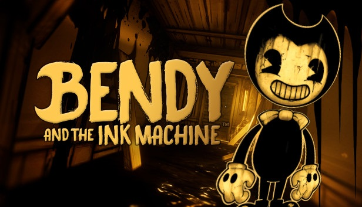

Bendy nebo také "Dancing Demon" je hlavní postava hry BendyandtheInkMachine. Dříve to byla hlavní postava animovaného filmu pro děti, který měl velký úspěch. Bendy však není tak roztomilý a hodný jak je všem podsouváno v již zmíněném animovaném filmu. Ještě v seriálových dobách byl Bendy jen malý roztomilý démonek, který přinášel úsměv do tváří dětí i dospělých. Tělo měl celé černé, kromě oblasti obličeje. Jeho jediným oblečením se staly černé boty, bílé rukavice s párem přišitých černých knoflíků nebo občas se třemi tmavými proužky a pod krkem jednoduchým stylem vázaná bílá mašle. Jeho kulatá hlava byla zakončena obloukovitým tvarem, tudíž její špičky připomínaly rohy. V obličeji se mu rozpínal široký šklebící se úsměv a nad ním velká černá očka. Jeho výška zhruba činila něco okolo jednoho metru. Henry mu namaloval i "neviditelné obočí", díky kterému mohl vyjadřovat své emoce.
Ovšem Joeyho rituál měl nečekaný výsledný efekt. Místo postavičky hravého démona z dětských pohádek, přivedl na svět stvoření, které ve své duši nemělo ani špetku dobra. Už jen jeho hrůzu nahánějící vzhled o tom svědčil. Svojí vychrtlou, inkoustovou postavou se podobá smrtce. Jeho tělo se od krku dolů rozdělilo na dva vzhledově odlišné díly. Levá polovina mírně připomíná lidské tělo. Ruka je zakončena pěti prsty a na konec nohy nápadně připomíná botu. Zatím co ta pravá strana vypadá jako jeho původní animované tělo. Na ruce má navlečenou obří bílou rukavici, na které má narozdíl od té druhé jen čtyři prsty a zakončení pravé nohy patrně připomíná jednu z jeho černých bot. Jediné, čím se od své kreslené verze neliší, je tvar hlavy, bílá mašle a veselý úsměv, který ovšem už nepůsobí tak přátelsky. Oči už nelze spatřit, protože horní oblast obličeje pokrývá inkoust. Nyní jeho nadlidská výška činí něco okolo tří metrů.
Vysvětlení příběhu naleznete zde na youtube

| Jméno | Pohlaví |
| Bendy | M |
|---|---|
| Alice Angel | Ž |
| Boris | Z |
Zde je Galerie obrázků